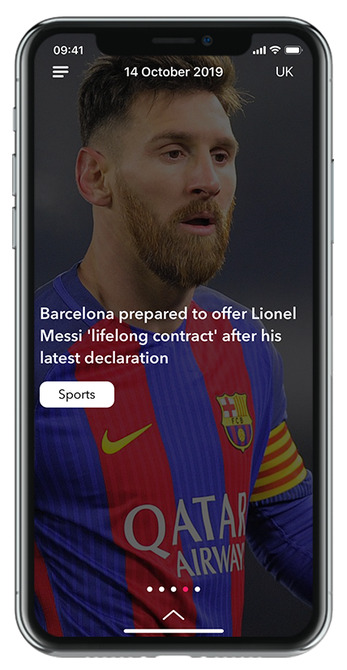
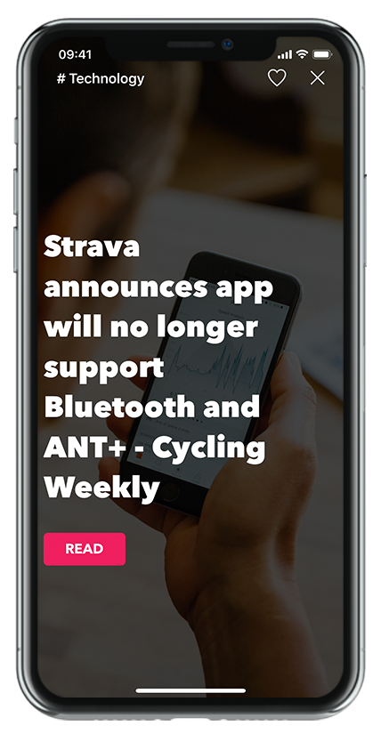
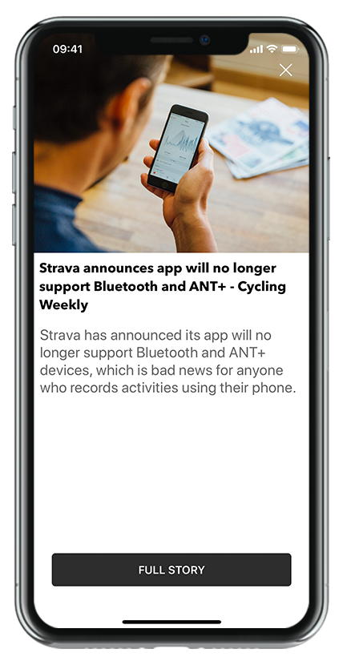
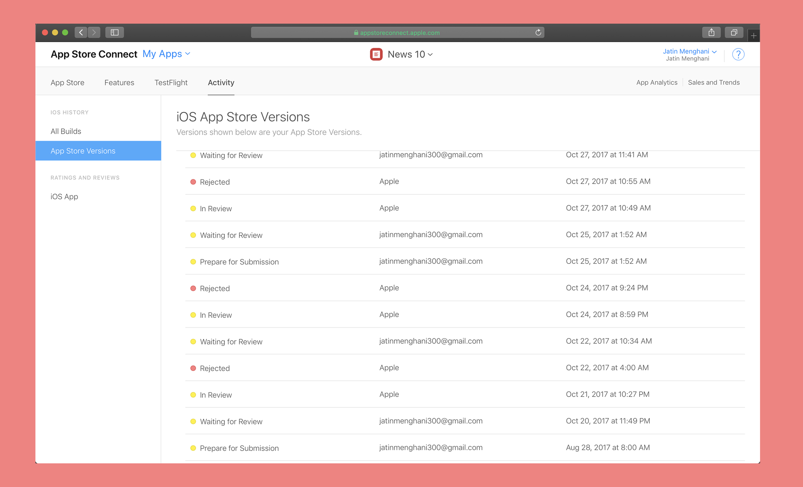

News 10
The story behind app
Usually people tend to look for solutions, but the kind I am, my focus always have been in looking for problems and providing
solutions with the skills I hold. The idea of News 10 came to me before I even knew anything about App Development.



I usually had the habit of observing people and how much they are aware about the happenings around them and to my notice, it came
out that millennials have totally stopped reading Newspaper, the reason being heavy content in the newspapers overwhelming the eyes
and developed zero interest in reading further. Hence, the thought clicked, why not to design an app that provides valuable news in
just few lines and only if people are interested in reading further, its just a swipe away…
Though, it wasn’t easy to launch the app as it was rejected 8 times by Apple due to copyright issues. There were times I was completely
de-motivated but solving the reading habits through medium of my app kept me going.

But after series of rejections and hustle, I am proud to finally have it available on the App Store for free.
Download on the App Store